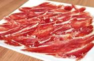

El jamón (anca, pernil o pierna) es el nombre genérico del producto alimenticio obtenido de las patas traseras del cerdo. En España, la preparación más habitual del jamón es salado en crudo y curado de forma natural. Las patas delanteras del cerdo, pese a tener un proceso idéntico de elaboración, reciben el nombre de paleta o paletilla. También reciben el nombre de "lacón"; palabra que se aplica exclusivamente a la paleta o paletilla de cerdo. Las dos variedades más conocidas de jamón curado son el de España (jamón ibérico, jamón serrano) y el prosciutto italiano. En diversos países latinoamericanos el nombre de jamón hace referencia solamente al jamón York.
